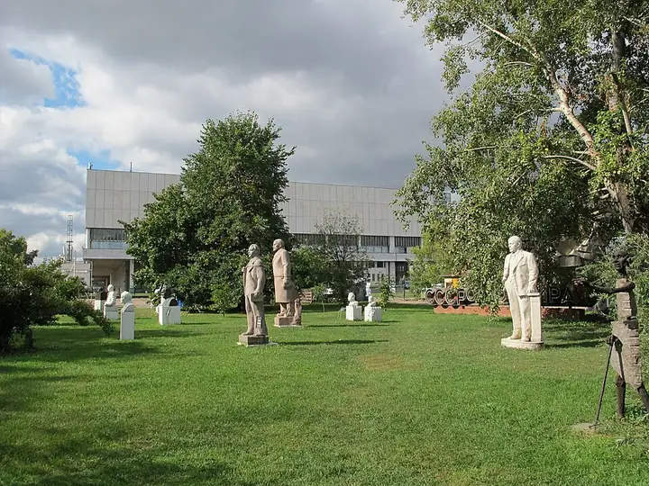

Фото: sailko, CC BY-SA 3.0 · Wikimedia Commons
Парк · ЦАО
Музеон
Парк скульптур и прогулка по набережной Москвы-реки.
- ₽ · до 1 500 ₽ на человека
- в 5 планах
Позвать сюда: МузеонОткрыть в каталоге: МузеонМаршрут до места: Музеон
Адрес и детали
- Адрес
- Крымский Вал, 2
Открыть на Яндекс Картах (в новой вкладке) - Метро
- м. Парк культуры
- Округ
- Центр (ЦАО)
- Цена
- до 1 500 ₽ на человека
Планы с этим местом 5
- Novikov Space · Творческая студия · м. Полянка
- 10 минут пешкомМузеон · Парк
Вместе лепите посуду на память, а потом гуляете по набережной.
Открыть план: Гончарка на двоихПозвать сюда: Гончарка на двоих
Фото: sailko, CC BY-SA 3.0 · Wikimedia Commons
- ГЭС-2 · Дом культуры · м. Кропоткинская
- 15 минут пешкомМузеон · Парк
Выставки и кино в бывшей электростанции, потом прогулка вдоль реки до Музеона.
Открыть план: ГЭС-2 и набережнаяПозвать сюда: ГЭС-2 и набережная
Фото: Юрий Д.К., CC BY 4.0 · Wikimedia Commons
- ГЭС-2 · Дом культуры · м. Кропоткинская
- 15 минут пешкомМузеон · Парк
Бесплатные выставки в бывшей электростанции, а потом прогулка вдоль реки до Музеона.
Открыть план: ГЭС-2 и прогулка к МузеонуПозвать сюда: ГЭС-2 и прогулка к Музеону
Фото: Юрий Д.К., CC BY 4.0 · Wikimedia Commons
- Новая Третьяковка · Музей · м. Октябрьская
- 1 минута пешкомМузеон · Парк
Искусство XX века от Малевича до наших дней, а через минуту — парк скульптур Музеон и прогулка по набережной Москвы-реки.
Открыть план: Новая Третьяковка и МузеонПозвать сюда: Новая Третьяковка и Музеон
Фото: Tretyakovgallery, CC BY-SA 4.0 · Wikimedia Commons
- Novikov Space · Творческая студия · м. Полянка
- 10 минут пешкомМузеон · Парк
Собираете букеты на мастер-классе и гуляете с ними по Музеону.
Открыть план: Цветы и набережнаяПозвать сюда: Цветы и набережная
Фото: sailko, CC BY-SA 3.0 · Wikimedia Commons


Похожие рядом


Что ещё рядом
Как позвать
- Выбери план, место или событие — в карточке адрес, цены и маршрут в Яндекс Картах.
- Нажми «Позвать сюда» — соберётся приглашение-игра для свидания или голосование для компании.
- Отправь ссылку в любой мессенджер: тебе ответят, а компания отметит, куда и когда может. Бесплатно и без регистрации.